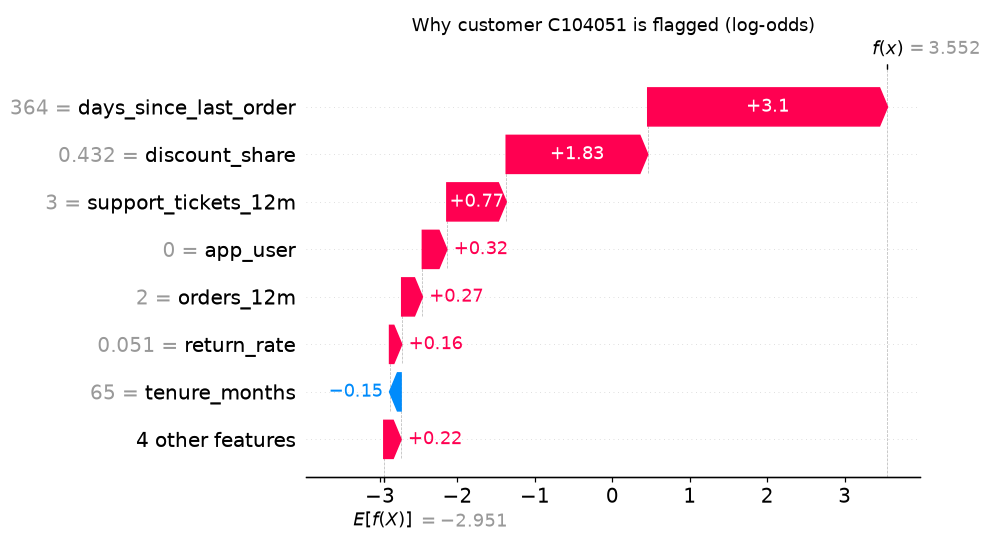
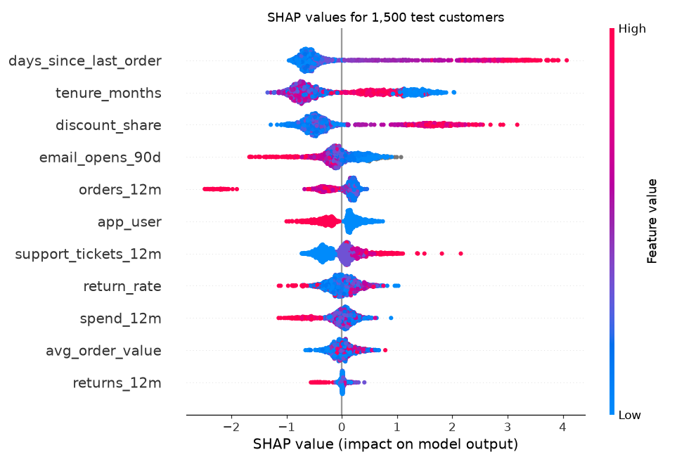
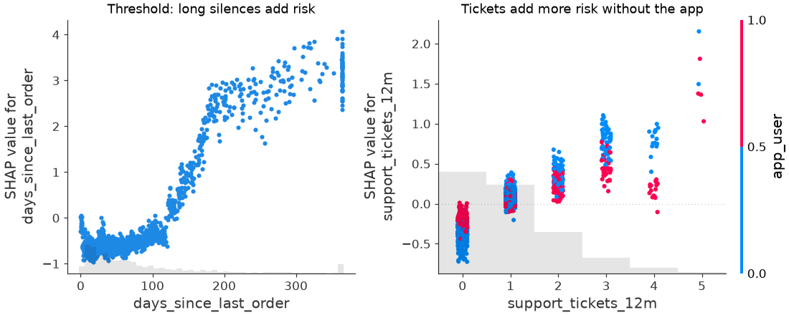

🎲 Lesson 7.2: SHAP Values
Answer the question every flagged customer raises, "why this person?", by splitting each prediction into a fair share for every feature.
🎯 Learning Objectives
By the end of this lesson, you will be able to:
- Explain the Shapley idea (average contribution over every order in which features join) and compute it by hand for a tiny model
- Compute SHAP values for a gradient-boosting model with
shap.TreeExplainerand check that they add up to the prediction - Read waterfall, beeswarm and scatter plots, including the units (log-odds) they are drawn in
- Use a model-agnostic explainer on a pipeline, and turn SHAP values into plain-language reason codes
In This Lesson
🧭 Splitting a Prediction Fairly
In Lesson 7.1 you learned what the churn model relies on overall. Now a customer-care agent opens the call list, sees that a customer has a 97% churn risk, and asks: "What should I talk about?" Global importance cannot answer that. This customer might be flagged for a long silence, another for heavy discount use and support complaints. You need a local explanation: one that splits this prediction into parts.
💡 Mental Model: Splitting a Team Bonus
A team of three wins a bonus. How much did each person contribute? Asking "what would the team have earned without Ana?" is unfair when people work together, because the answer depends on who else is in the room. The economist Lloyd Shapley's answer (1953): imagine the team members arriving one at a time, in every possible order. Each time someone arrives, credit them with how much the result went up. Average each person's credit over all the orders. That average is their Shapley value, and it is the only split that satisfies a short list of fairness rules, including "the shares add up to the whole bonus".
For a prediction, the players are the features, and the "bonus" is how far this customer's prediction is from the model's average prediction. SHAP (SHapley Additive exPlanations) is the library and method that computes these shares for machine-learning models.
🤔 Why This Matters
SHAP gives every prediction a breakdown that adds up exactly, so "why" becomes a table you can check. Averaged over many customers, the same numbers become a global picture that shows both how much each feature matters and in which direction. It has become the most widely used explanation method for tabular models, so you will meet its plots in reports and dashboards. Knowing what they mean, and what they do not, protects you from both overtrusting and dismissing them.
✋ Shapley Values by Hand
The idea is easiest to see on a model small enough to read. Here is a hand-written risk score with three features and one interaction: a long silence is worse for customers without the app.
import itertools
def toy_risk(days, disc, app):
risk = 0.10
if days > 150:
risk += 0.30
if disc > 0.35:
risk += 0.15
if days > 150 and app == 0:
risk += 0.10
return risk
reference = {"days": 40, "disc": 0.15, "app": 1} # a typical customer
customer = {"days": 240, "disc": 0.45, "app": 0} # the customer to explain
names = list(customer)
def value(present):
"""Risk when the features in `present` take the customer's values and the rest the reference's."""
return toy_risk(**{n: customer[n] if n in present else reference[n] for n in names})
shares = dict.fromkeys(names, 0.0)
orders = list(itertools.permutations(names))
for order in orders:
present = set()
for name in order:
before = value(present)
present.add(name)
shares[name] += value(present) - before
shares = {n: round(s / len(orders), 3) for n, s in shares.items()}
print("orders tried:", len(orders))
print("reference risk:", value(set()), " customer risk:", value(set(names)))
print("Shapley values:", shares, " sum:", round(sum(shares.values()), 3))Output
orders tried: 6
reference risk: 0.1 customer risk: 0.65
Shapley values: {'days': 0.35, 'disc': 0.15, 'app': 0.05} sum: 0.55Walk through what happened. The customer's risk (0.65) is 0.55 above the reference (0.10), and the three shares add up to exactly 0.55. Discount reliance gets its 0.15: it adds that amount whenever it arrives. The interesting part is the 0.10 interaction bonus. It only appears once both the long silence and "no app" are present, so whichever of the two arrives second gets it. Over all six orders, each arrives second half the time, so the 0.10 is split evenly: days gets 0.30 + 0.05 and app gets 0.05.
The shap library computes the same thing. Its Exact explainer tries every subset, just like the loop, so on this tiny model it must agree:
import numpy as np
import shap
toy_model = lambda rows: np.array([toy_risk(*row) for row in rows])
toy_explainer = shap.explainers.Exact(toy_model, np.array([[40, 0.15, 1]]))
print(toy_explainer(np.array([[240, 0.45, 0]])).values.round(3))Output
[[0.35 0.15 0.05]]🔑 Key Terms
Base value (or expected value): the model's average output over a background set of customers; the starting point of every explanation. SHAP value: one feature's share of the gap between the base value and this prediction. Additivity: base value + all SHAP values = the prediction, exactly. Background data: the customers that define "a typical value" when a feature is left out (here, the single reference customer).
The catch is cost. With 11 features there are 39,916,800 orders, and real models cannot be read like toy_risk. SHAP's contribution was to find fast exact algorithms for some model families (trees, linear models) and good approximations for the rest.
🌲 SHAP for the Churn Model
Rebuild Lesson 7.1's gradient-boosting model: same 11 features, same split.
import pandas as pd
from sklearn.model_selection import train_test_split
from sklearn.ensemble import HistGradientBoostingClassifier
from sklearn.metrics import roc_auc_score
customers = pd.read_csv("data/customers_churn.csv")
features = ["tenure_months", "orders_12m", "spend_12m", "avg_order_value", "days_since_last_order",
"returns_12m", "return_rate", "support_tickets_12m", "discount_share", "app_user",
"email_opens_90d"]
X = customers[features].astype(float)
y = customers["churned"]
X_train, X_test, y_train, y_test = train_test_split(X, y, test_size=0.25, stratify=y, random_state=42)
hgb = HistGradientBoostingClassifier(random_state=42).fit(X_train, y_train)
print(f"test ROC AUC {roc_auc_score(y_test, hgb.predict_proba(X_test)[:, 1]):.3f}")Output
test ROC AUC 0.865shap.TreeExplainer computes exact SHAP values for tree ensembles in a fraction of a second per customer, by walking the trees instead of trying feature orders. Calling the explainer on a DataFrame returns an Explanation object that holds the values, the base value and the feature data together.
explainer = shap.TreeExplainer(hgb)
sv = explainer(X_test)
print(type(sv).__name__, sv.values.shape)
print(f"base value: {sv.base_values[0]:.3f}")
raw_score = hgb.decision_function(X_test)
gap = np.abs(sv.base_values + sv.values.sum(axis=1) - raw_score).max()
print(f"largest additivity gap over 1,500 customers: {gap:.1e}")Output
Explanation (1500, 11)
base value: -2.951
largest additivity gap over 1,500 customers: 1.5e-14One row of 11 SHAP values per test customer. The additivity gap is at the level of floating-point rounding: base value plus the shares reproduces the model's output for every customer. But notice which output: decision_function, not predict_proba.
⚠️ The Units Are Log-Odds
A gradient-boosting classifier adds up its trees in log-odds and only at the end squashes the total into a probability with the logistic (sigmoid) function. TreeExplainer explains the sum before the squash, so SHAP values here are in log-odds. The base value, -2.95, is the average log-odds over the training customers. Squashed, it is about 5%, not the 16.5% churn rate, because the average of squashed numbers is not the squash of the average. Positive SHAP values push towards churn, negative ones away, and you can compare their sizes, but you cannot add them to a probability.
from scipy.special import expit # the logistic function: log-odds to probability
print(f"base value as a probability: {expit(sv.base_values[0]):.3f}")
print(f"average predicted probability: {hgb.predict_proba(X_train)[:, 1].mean():.3f}")Output
base value as a probability: 0.050
average predicted probability: 0.166🙋 Why This Customer?
Take the riskiest customer in the test set. X_test keeps the original row numbers, so you can look up the customer ID.
proba = hgb.predict_proba(X_test)[:, 1]
i = int(proba.argmax())
row_id = X_test.index[i]
print(customers.loc[row_id, "customer_id"], f"churn probability {proba[i]:.3f}")
why = pd.DataFrame({"value": X_test.iloc[i], "shap": sv.values[i]}).sort_values("shap", ascending=False)
print(why.round(3))Output
C104051 churn probability 0.972
value shap
days_since_last_order 364.000 3.095
discount_share 0.432 1.827
support_tickets_12m 3.000 0.767
app_user 0.000 0.316
orders_12m 2.000 0.267
return_rate 0.051 0.157
spend_12m 223.780 0.110
email_opens_90d 6.000 0.084
avg_order_value 111.890 0.061
returns_12m 0.000 -0.032
tenure_months 65.000 -0.149This customer has not ordered for 364 days (the maximum), relies on discounts for 43% of their spend, filed three support tickets and does not use the app. The SHAP values rank those exactly as an experienced agent might: silence first (+3.10 log-odds), discounts second (+1.83), complaints third (+0.77). A long tenure (65 months) pulls slightly the other way. The waterfall plot draws the same table as a staircase from the base value to the prediction:
import matplotlib.pyplot as plt
plt.figure()
shap.plots.waterfall(sv[i], max_display=8, show=False)
plt.gcf().set_size_inches(9, 5)
plt.title("Why customer C104051 is flagged (log-odds)")
plt.tight_layout()
plt.show()
To speak in probabilities, squash the end points. The model moves this customer from a typical 5% to 97%; most of that journey is the long silence and the discounts.
start = sv.base_values[i]
end = start + sv.values[i].sum()
print(f"log-odds {start:.2f} -> {end:.2f}")
print(f"probability {expit(start):.3f} -> {expit(end):.3f}")Output
log-odds -2.95 -> 3.55
probability 0.050 -> 0.972🐝 From Many Explanations to the Big Picture
You have 1,500 local explanations. Averaging their sizes gives a global importance; plotting them all shows direction and shape too. Start with the numbers: the mean absolute SHAP value per feature.
mean_abs = pd.Series(np.abs(sv.values).mean(axis=0), index=features).sort_values(ascending=False)
print(mean_abs.round(3))Output
days_since_last_order 0.903
tenure_months 0.802
discount_share 0.742
email_opens_90d 0.278
orders_12m 0.278
app_user 0.273
support_tickets_12m 0.267
return_rate 0.193
spend_12m 0.171
avg_order_value 0.137
returns_12m 0.043
dtype: float64The top three are the same three features as Lesson 7.1's permutation importance, though tenure and discounts swap places. Below them, the two methods disagree a little, and that is expected: they measure different things. Mean |SHAP| measures how much a feature moves predictions; permutation importance measures how much the score depends on it. A feature can move predictions a lot without improving the ranking, for example when another feature carries the same information.
The beeswarm plot shows every customer as a dot: position is the SHAP value, color is the feature's value (red high, blue low).
plt.figure()
shap.plots.beeswarm(sv, max_display=11, show=False)
plt.gcf().set_size_inches(9, 6)
plt.title("SHAP values for 1,500 test customers")
plt.tight_layout()
plt.show()
Three things to read from it. Recency's red tail is long while its blue mass is near zero: most customers ordered recently and get a small negative share, a few silent ones get a large positive one (the threshold again). Discount reliance looks the same. App users (red) sit left of zero: the app is associated with lower risk.
Scatter Plots: Shape and Interactions
A SHAP scatter plot puts a feature's value on the x-axis and its SHAP value on the y-axis, one dot per customer. Coloring by a second feature reveals interactions. In 7.1 you found that support tickets matter for non-app users only; here it is in one picture. Each plain plt.figure() or plt.subplots() before a SHAP plot starts a fresh figure, so plots do not draw on top of each other.
fig, axes = plt.subplots(1, 2, figsize=(10, 4), layout="constrained")
shap.plots.scatter(sv[:, "days_since_last_order"], ax=axes[0], show=False)
shap.plots.scatter(sv[:, "support_tickets_12m"], color=sv[:, "app_user"], ax=axes[1], show=False)
axes[0].set_title("Threshold: long silences add risk")
axes[1].set_title("Tickets add more risk without the app")
plt.show()
The same interaction in numbers, the average SHAP value of support tickets by ticket count and app use:
tickets = pd.DataFrame({
"tickets": X_test["support_tickets_12m"].clip(upper=4),
"app_user": X_test["app_user"],
"shap": sv[:, "support_tickets_12m"].values,
})
print(tickets.pivot_table(index="tickets", columns="app_user", values="shap", aggfunc="mean").round(2))Output
app_user 0.0 1.0
tickets
0.0 -0.39 -0.23
1.0 0.09 0.07
2.0 0.35 0.23
3.0 0.78 0.46
4.0 0.92 0.40(Ticket counts above 4 are grouped with 4 because there are few of them.) For non-app users (column 0.0) each extra ticket adds risk, reaching about +0.9 log-odds at four or more; for app users (column 1.0) the rise is roughly half as large. A logistic regression without a crossed term would give one slope to both groups.
🧰 Any Model: the Permutation Explainer
TreeExplainer only works on tree models it recognizes, and not on a Pipeline (see Common Mistakes). For anything else, SHAP has model-agnostic explainers. They treat the model as a function, try many feature subsets, and fill "missing" features with values from a background sample. The PermutationExplainer is a good default: it walks through random feature orders, like the toy loop above, and is exact in its additivity.
Here it explains the logistic-regression pipeline from Lesson 7.1, in probability units, for the same customer. A background of 100 training customers keeps it fast; a larger one is more precise and slower.
from sklearn.pipeline import make_pipeline
from sklearn.impute import SimpleImputer
from sklearn.preprocessing import StandardScaler
from sklearn.linear_model import LogisticRegression
logreg = make_pipeline(SimpleImputer(strategy="median"), StandardScaler(), LogisticRegression())
logreg.fit(X_train, y_train)
def churn_probability(rows):
return logreg.predict_proba(pd.DataFrame(rows, columns=features))[:, 1]
background = X_train.sample(100, random_state=42)
perm_explainer = shap.PermutationExplainer(churn_probability, background, seed=42)
lr_sv = perm_explainer(X_test.iloc[[i]])
lr_why = pd.Series(lr_sv.values[0], index=features).sort_values(ascending=False)
print(f"base {lr_sv.base_values[0]:.3f} + shares {lr_sv.values[0].sum():.3f} = {churn_probability(X_test.iloc[[i]])[0]:.3f}")
print(lr_why.round(3).head(5))Output
base 0.157 + shares 0.791 = 0.948
days_since_last_order 0.506
discount_share 0.113
support_tickets_12m 0.104
orders_12m 0.037
app_user 0.028
dtype: float64Two differences from the tree explanation. The units are now probabilities, because the function you passed returns probabilities, so the shares add up to the predicted probability. And the logistic model also blames the long silence and the discounts first: two different models, the same story for this customer. When models disagree about a customer, that is worth investigating before anyone acts on either explanation.
💡 Which Explainer?
| Model | Explainer | Speed |
|---|---|---|
| Tree ensembles (HistGradientBoosting, random forest, XGBoost, LightGBM) | shap.TreeExplainer(model) | Fast, exact |
| Linear models on numeric features | shap.LinearExplainer(model, background) | Fast, exact |
| Anything else, including pipelines | shap.PermutationExplainer(function, background) | Slow: explain hundreds of rows, not millions |
shap.Explainer(model, background) picks one for you, but naming it yourself makes the units and the cost explicit.
🧱 What SHAP Does Not Tell You
- It explains the model, not the world. "Discount reliance adds 1.8 log-odds for this customer" says what the model does with that number. It does not say that lowering this customer's discounts would keep them.
- "Missing" has to be defined. A SHAP value compares the customer with a background. Change the background (all customers, only loyal ones) and the shares change. TreeExplainer's default uses the training data stored in the trees.
- Correlated features share credit. As with permutation importance,
spend_12m,orders_12mandavg_order_valuecan split one underlying fact between them. Sum their SHAP values when you want the group's effect. - A clean explanation of a bad model is still a bad model. Check performance first.
⚠️ Common Mistakes
1. Handing a Pipeline to TreeExplainer
shap.TreeExplainer(logreg)Error
InvalidModelError: Model type not yet supported by TreeExplainer: <class 'sklearn.pipeline.Pipeline'>What it means: TreeExplainer reads the internal structure of tree models. A Pipeline (or any non-tree model) has no trees to read. Fix: for a tree model inside a pipeline, explain the last step on the transformed data (pipe[-1] and pipe[:-1].transform(X)); for anything else, use PermutationExplainer with a function that calls the whole pipeline.
2. A Random Forest Explains Both Classes
from sklearn.ensemble import RandomForestClassifier
forest = RandomForestClassifier(n_estimators=100, min_samples_leaf=5, random_state=42, n_jobs=-1)
forest.fit(X_train, y_train)
forest_sv = shap.TreeExplainer(forest)(X_test.iloc[:200])
print(forest_sv.values.shape)
shap.plots.waterfall(forest_sv[0], show=False)Error
(200, 11, 2)
ValueError: The waterfall plot can currently only plot a single explanation, but a matrix of explanations (shape (11, 2)) was passed! Perhaps try `shap.plots.waterfall(shap_values[0])` or for multi-output models, try `shap.plots.waterfall(shap_values[0, 0])`.What it means: a random forest's SHAP values are in probability units and come for each class, so the shape is (rows, features, 2) instead of (rows, features). Fix: pick the churn class, forest_sv[0, :, 1]. Always print .values.shape before plotting a new model's explanation.
3. Adding Log-Odds to a Probability
wrong = proba.mean() + sv.values[i].sum()
right = expit(sv.base_values[i] + sv.values[i].sum())
print(f"wrong: {wrong:.2f} right: {right:.3f}")Output (no error, and that is the problem)
wrong: 6.65 right: 0.972What happened: SHAP values from TreeExplainer on a boosting classifier are log-odds. Adding them to an average probability gives a "probability" above 6. Less extreme customers give answers that look plausible and are still wrong. Fix: add SHAP values to the base value, in log-odds, then convert with expit. Compare sizes and signs of SHAP values freely; do not mix units.
4. Calling a Top SHAP Feature "the Cause"
An agent reads "discount_share +1.83" and offers the customer fewer discounts. What is wrong: the model associates discount reliance with churn; nobody tested what happens when discounts change. Fix: phrase reasons as "flagged because", not "leaving because", and use them to start a conversation, not to prescribe a treatment.
🛠️ Project: Reasons for the Call List
The retention team will call the 20 riskiest test customers. Each agent wants three reasons per customer, in words, not log-odds. You will explain the model, pick the 20, translate their top SHAP values into short phrases, and save call_list_reasons.csv. Work in a new notebook called lesson_7_2_project. Allow about 45 minutes.
🛠️ Step 1: Load, split, train (5 min)
Keep the test rows with their IDs by splitting the whole table, as in Lesson 1.1's project.
import numpy as np
import pandas as pd
import shap
from scipy.special import expit
from sklearn.model_selection import train_test_split
from sklearn.ensemble import HistGradientBoostingClassifier
customers = pd.read_csv("data/customers_churn.csv")
features = ["tenure_months", "orders_12m", "spend_12m", "avg_order_value", "days_since_last_order",
"returns_12m", "return_rate", "support_tickets_12m", "discount_share", "app_user",
"email_opens_90d"]
train, test = train_test_split(customers, test_size=0.25, stratify=customers["churned"], random_state=42)
X_train, X_test = train[features].astype(float), test[features].astype(float)
model = HistGradientBoostingClassifier(random_state=42).fit(X_train, train["churned"])
print(len(train), len(test), test["customer_id"].iloc[0])Output
4500 1500 C102112🛠️ Step 2: Pick the 20 and explain them (5 min)
Only the 20 rows need explaining. Keep their probabilities and SHAP values side by side.
test = test.assign(churn_probability=model.predict_proba(X_test)[:, 1])
top20 = test.nlargest(20, "churn_probability")
explanation = shap.TreeExplainer(model)(top20[features].astype(float))
shap_table = pd.DataFrame(explanation.values, columns=features, index=top20["customer_id"])
print(shap_table[["days_since_last_order", "discount_share", "tenure_months"]].head().round(2))Output
days_since_last_order discount_share tenure_months
customer_id
C104051 3.10 1.83 -0.15
C105889 2.21 1.73 1.42
C104116 2.81 1.78 0.90
C104809 2.79 -0.31 1.10
C100543 2.66 1.77 1.04🛠️ Step 3: Write a phrase for each feature (15 min)
A reason code is a sentence template filled with the customer's real value. Write one per feature. Keep them neutral and factual: they describe the account, not the person.
phrases = {
"days_since_last_order": "no order in {:.0f} days",
"discount_share": "{:.0%} of spend on discounted items",
"tenure_months": "member for {:.0f} months",
"support_tickets_12m": "{:.0f} support tickets this year",
"app_user": "does not use the app",
"email_opens_90d": "opened {:.0f} emails in 90 days",
"orders_12m": "only {:.0f} orders this year",
"return_rate": "{:.0%} of spend refunded",
"returns_12m": "{:.0f} orders with returns",
"spend_12m": "spent ${:,.0f} this year",
"avg_order_value": "average order ${:,.0f}",
}
def top_reasons(customer_id, n=3):
shares = shap_table.loc[customer_id]
values = top20.set_index("customer_id").loc[customer_id, features]
reasons = []
for feature in shares[shares > 0].sort_values(ascending=False).index[:n]:
value = values[feature]
text = "email opens unknown" if pd.isna(value) else phrases[feature].format(value)
reasons.append(text)
return reasons
first = top20["customer_id"].iloc[0]
print(first, top_reasons(first))Output
C104051 ['no order in 364 days', '43% of spend on discounted items', '3 support tickets this year']Only features with a positive share become reasons: the agent wants what raised the risk. email_opens_90d can be missing, so the function handles NaN instead of printing "opened nan emails".
🛠️ Step 4: Build the call list (10 min)
rows = []
for cid, p in zip(top20["customer_id"], top20["churn_probability"]):
reasons = top_reasons(cid) + ["", "", ""]
rows.append({"customer_id": cid, "churn_probability": round(p, 3),
"reason_1": reasons[0], "reason_2": reasons[1], "reason_3": reasons[2]})
call_list = pd.DataFrame(rows)
pd.set_option("display.width", 150)
print(call_list.head(5).to_string(index=False))Output
customer_id churn_probability reason_1 reason_2 reason_3
C104051 0.972 no order in 364 days 43% of spend on discounted items 3 support tickets this year
C105889 0.970 no order in 185 days 47% of spend on discounted items member for 4 months
C104116 0.965 no order in 226 days 45% of spend on discounted items member for 94 months
C104809 0.961 no order in 201 days member for 82 months email opens unknown
C100543 0.955 no order in 182 days 53% of spend on discounted items member for 86 months🛠️ Step 5: Summarize and save (10 min)
Which feature is the most common top reason across the 20? This tells the team what most calls will be about. Then save the list without the outcome column (agents must not see it, and in real use it would not exist yet).
top_feature = shap_table.idxmax(axis=1)
print(top_feature.value_counts())
call_list.to_csv("call_list_reasons.csv", index=False)
really_churned = test.set_index("customer_id").loc[call_list["customer_id"], "churned"].sum()
print(f"saved call_list_reasons.csv ({len(call_list)} rows); {really_churned} of 20 really churned")Output
days_since_last_order 16
discount_share 4
Name: count, dtype: int64
saved call_list_reasons.csv (20 rows); 16 of 20 really churnedSixteen of the 20 calls will open with a long silence and four with heavy discount use, so the team should prepare a "we miss you" offer and a conversation about value rather than price. The last line peeks at the answers only to grade the list, as in Lesson 1.1: in production nobody would know yet.
✅ Project Completion Checklist
- The 20 customers are the highest predicted probabilities in the test set
- SHAP values come from
shap.TreeExplaineron the fitted model, and you know they are log-odds - Every feature has a neutral, factual phrase, and missing values are handled
- Only positive SHAP values become reasons
call_list_reasons.csvholds IDs, probabilities and three reasons, and no outcome column- You can say which reason dominates the list and what the team should prepare for
🏋️ Hands-on Exercises
These continue in the project notebook, so model, X_test, test and phrases already exist.
🏋️ Exercise 1: The Safest Customer
Find the test customer with the lowest churn probability and print the three features that push their risk down the most (the most negative SHAP values) with their values.
💡 Hint
test["churn_probability"].idxmin() gives the row label; X_test.loc[[label]] keeps it a one-row DataFrame for the explainer.
✅ Solution
label = test["churn_probability"].idxmin()
safe = shap.TreeExplainer(model)(X_test.loc[[label]])
protect = pd.DataFrame({"value": X_test.loc[label], "shap": safe.values[0]}).nsmallest(3, "shap")
print(test.loc[label, "customer_id"], round(test.loc[label, "churn_probability"], 4))
print(protect.round(3))Output
C101889 0.0002
value shap
orders_12m 14.00 -2.144
spend_12m 1788.34 -0.833
tenure_months 28.00 -0.597Fourteen orders this year, high spend and a mid-range tenure pull this customer's risk far below the base value. Notice that the protective reasons are not simply the riskiest customer's reasons reversed: frequent buying matters most here. Protective factors are useful too, for example to decide whom not to call.
🏋️ Exercise 2: The Tenure U-Shape in SHAP Values
Explain the whole test set. Group the SHAP values of tenure_months by tenure band (0 to 6, 6 to 24, 24 to 72, 72 to 96 months) with pd.cut and print the mean per band. Does it show the same U-shape as Lesson 7.1's partial dependence?
💡 Hint
pd.cut(X_test["tenure_months"], [0, 6, 24, 72, 96], include_lowest=True), then a groupby with observed=True.
✅ Solution
all_sv = shap.TreeExplainer(model)(X_test)
band = pd.cut(X_test["tenure_months"], [0, 6, 24, 72, 96], include_lowest=True)
tenure_shap = pd.Series(all_sv[:, "tenure_months"].values, index=X_test.index)
print(tenure_shap.groupby(band, observed=True).agg(["size", "mean"]).round(3))Output
size mean
tenure_months
(-0.001, 6.0] 304 1.297
(6.0, 24.0] 216 -0.560
(24.0, 72.0] 646 -0.739
(72.0, 96.0] 334 0.561Yes: new customers and the longest-standing ones get positive tenure shares, the middle bands negative ones. SHAP and partial dependence are different calculations that tell the same story here, which makes the U-shape a robust property of the model.
🏋️ Exercise 3: Find the Strongest Interaction
TreeExplainer can split each SHAP value further into a main effect and pairwise interaction effects: explainer.shap_interaction_values(X) returns an array of shape (rows, features, features). Compute it for the first 300 test customers, average the absolute values over customers, and print the three feature pairs with the largest interaction (off the diagonal).
💡 Hint
Set the diagonal to zero with np.fill_diagonal, then turn the matrix into a long Series with pd.DataFrame(...).stack(). Each pair appears twice (a,b and b,a), so keep pairs where the first name sorts before the second.
✅ Solution
inter = shap.TreeExplainer(model).shap_interaction_values(X_test.iloc[:300])
strength = np.abs(inter).mean(axis=0)
np.fill_diagonal(strength, 0)
pairs = pd.DataFrame(strength, index=features, columns=features).stack()
pairs = pairs[[a < b for a, b in pairs.index]]
print(inter.shape)
print(pairs.sort_values(ascending=False).head(3).round(3))Output
(300, 11, 11)
days_since_last_order tenure_months 0.073
app_user support_tickets_12m 0.061
discount_share tenure_months 0.061
dtype: float64The pairs at the top are the ones where "it depends" is strongest in the model. Interaction values are slow (they grow with the square of the number of features), which is why you computed them for 300 customers, not 1,500.
🏋️ Exercise 4: Do Two Good Models Give the Same Reasons? (Stretch)
Train RandomForestClassifier(n_estimators=200, min_samples_leaf=5, random_state=42) on the same data. For the 20 call-list customers, compare the top reason (the feature with the largest positive SHAP value) from the forest with the boosting model's. In how many of the 20 do they agree? Remember the forest's SHAP values have a class dimension.
💡 Hint
Random forests in scikit-learn accept missing values. Take forest_sv.values[:, :, 1] for the churn class, then idxmax(axis=1) on a DataFrame, as in Step 5.
✅ Solution
from sklearn.ensemble import RandomForestClassifier
forest = RandomForestClassifier(n_estimators=200, min_samples_leaf=5, random_state=42, n_jobs=-1)
forest.fit(X_train, train["churned"])
forest_sv = shap.TreeExplainer(forest)(top20[features].astype(float))
forest_top = pd.DataFrame(forest_sv.values[:, :, 1], columns=features, index=top20["customer_id"]).idxmax(axis=1)
agree = (forest_top == top_feature).sum()
print(f"top reason agrees for {agree} of 20 customers")
print(pd.crosstab(top_feature, forest_top))Output
top reason agrees for 20 of 20 customers
col_0 days_since_last_order discount_share
row_0
days_since_last_order 16 0
discount_share 0 4Two models with similar accuracy agree on the main reason for all 20 of these customers: for the most extreme cases, the story is clear. For less extreme customers the top reasons are often closer in size, and the two models can disagree; try the check on customers ranked 200 to 300. A reason that flips between equally good models is a weak basis for a conversation; one that holds across models is a stronger one.
🎯 Quick Quiz
🎯 Check Your Understanding
Question 1: In the toy model, a 0.10 bonus applies only when the silence is long and the customer has no app. How do Shapley values divide that bonus between the two features?
Question 2: For the gradient-boosting churn model, what do sv.base_values[i] + sv.values[i].sum() add up to?
Question 3: In a beeswarm plot, the red dots for days_since_last_order sit far to the right of zero. What does that mean?
Question 4: You want SHAP values for a Pipeline that one-hot encodes categories and ends in an SVM. Which approach works?
Question 5: spend_12m has a small mean |SHAP|, but spend is clearly related to churn. What is the most likely reason?
❓ Common Questions at This Stage
Can I get SHAP values in probabilities for the boosting model?
Not additively from TreeExplainer's default. Either convert the end points with expit, as in this lesson, or use a model-agnostic explainer on predict_proba (slower). Probability-unit shares are easier to read but depend on the order you think about features in, because the squash is not linear; log-odds shares are the honest additive ones.
Should I explain the training set or the test set?
For understanding how the model behaves on new customers, the test set (or new data). Training-set explanations include the patterns the model memorized. For a production call list, you explain whichever customers you are about to act on.
What about categorical features like home_store?
With one-hot encoding, each category column gets its own SHAP value; sum the columns of one feature to get its total share. With a model-agnostic explainer on a pipeline that takes the raw columns, you get one share per original feature directly.
Is SHAP safe to show to customers?
Treat it as internal decision support. Explanations can reveal how a model works (which someone could game) and can sound like accusations if phrased carelessly. If explanations are owed to customers by law or policy, involve the people responsible for that, and use plain, neutral language like the reason codes in the project.
🌟 Going Further: Bonus Challenge
Sum the SHAP values of orders_12m, spend_12m and avg_order_value into one "purchase volume" share for every test customer. Compare the mean absolute value of the group with the three single ones. Does the group effect resemble what you found with grouped permutation importance in Lesson 7.1?
📓 Learning Journal
Take five minutes to write in your learning journal (the journal.md file you started in Lesson 0.1, or a paper notebook). Jot down:
- Key concepts you learned today
- Techniques that clicked (and the ones that have not, yet)
- Questions or confusion to come back to
- Ideas to try on your own
- Progress and feelings: how did this lesson go for you?
✍️ This lesson's prompt: Explain the team-bonus idea to a friend who has never heard of Shapley values, using the toy churn score. Then write how you would word the three reasons for customer C104051 if an agent were going to read them aloud on a call, and what you would make sure the agent does not say.
📝 Lesson Summary
🎓 Key Takeaways
- A Shapley value is a feature's average contribution over every order in which features could join; interaction effects are split fairly
- SHAP values add up: base value + all shares = the model output being explained
shap.TreeExplaineris fast and exact for tree models; for gradient-boosting classifiers its units are log-odds- Waterfall plots explain one prediction; beeswarm and mean |SHAP| summarize many; scatter plots show shapes and interactions
- Model-agnostic explainers (
PermutationExplainer) work on any function, including pipelines, at a higher cost - SHAP explains the model's behavior, not causes; correlated features share credit
🏆 What You've Accomplished
- You computed Shapley values by hand and matched the library
- You explained a real churn prediction and checked its additivity
- You read the recency threshold and the ticket-app interaction from SHAP plots
- You explained a pipeline with a model-agnostic explainer
- You turned SHAP values into neutral reason codes for a call list
🔭 Looking Ahead
In Lesson 7.3: LIME and Fairness Checks you will meet a different way to explain one prediction: fit a small, simple model that imitates the big one near a single customer. You will build it by hand, use the lime library, compare it with SHAP, and then check whether the churn model treats different age groups fairly.
📋 Before the Next Lesson
- Keep your project notebook; Lesson 7.3 explains the same customer, C104051, with LIME.
- Look at the call list and think about who is not on it. Would you expect the list to look the same for younger and older customers? Write down a guess.
🌱 Encouragement for the Journey
You just used an idea from cooperative game theory to explain a machine-learning model, checked it to the last decimal, and turned it into something a customer-care agent can use. That chain from math to a sentence on a call list is exactly what makes a model trustworthy in practice. If log-odds still feel slippery, that is fine: keep converting the end points with expit until it becomes second nature.